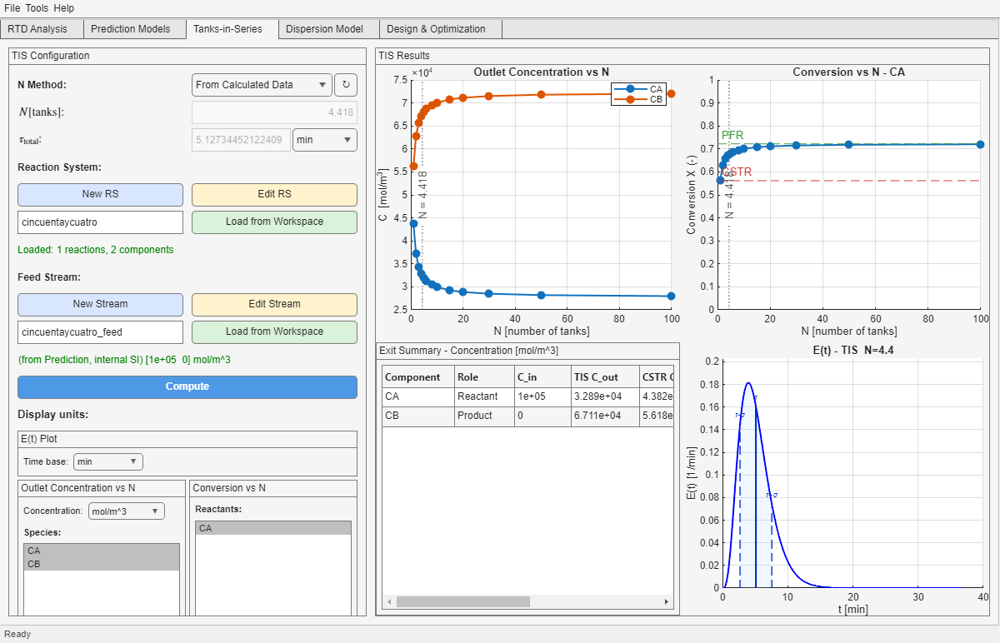

This tab replaces the full RTD by a cascade of equal CSTRs in series. It is useful when you want a compact equivalent model that still reflects RTD spread through the parameter N.
ReactionSys and a Stream if you want reactive results.N means broader residence-time spread and stronger backmixing.N approaches plug-flow behavior.N from the RTD variance or use a manual value.| Control or mode | How to read it |
|---|---|
| Manual / From Calculated Data | Decides whether the tab is fed directly from previously computed RTD data or configured locally. |
N mode | Lets you infer N from RTD spread or impose a manual cascade size. |
| ReactionSys and Stream loading | Provide the chemistry and inlet state needed for reactive tables and sweep plots. |
| Display selectors | Control which species or metric is emphasized in the sweep views without changing the underlying solution set. |
In practice, the most important modeling decision here is whether the inferred N is physically meaningful enough for your case or whether the full RTD route from Prediction Models is still the more honest representation.
For a broader comparison against Dispersion Model and the direct RTD route, see the Model Selection guide.

N, while the lower-right panel shows the equivalent E(t) with the same moment overlay style used in Tab 1.E(t) view for the equivalent cascade.| Panel | Use it for |
|---|---|
| Outlet Concentration vs N | Checking how sensitive each selected species is to the degree of backmixing represented by N. |
| Conversion vs N | Seeing where the current fitted or imported N sits relative to the CSTR and PFR limits. |
| E(t) - TIS Model | Visualizing the equivalent RTD shape associated with the current N. |
For help deciding whether a visible difference is large enough to matter, use the Results Interpretation appendix.
N is inferred from the RTD or set manually.N as a literal number of physical tanks instead of an RTD-based surrogate.